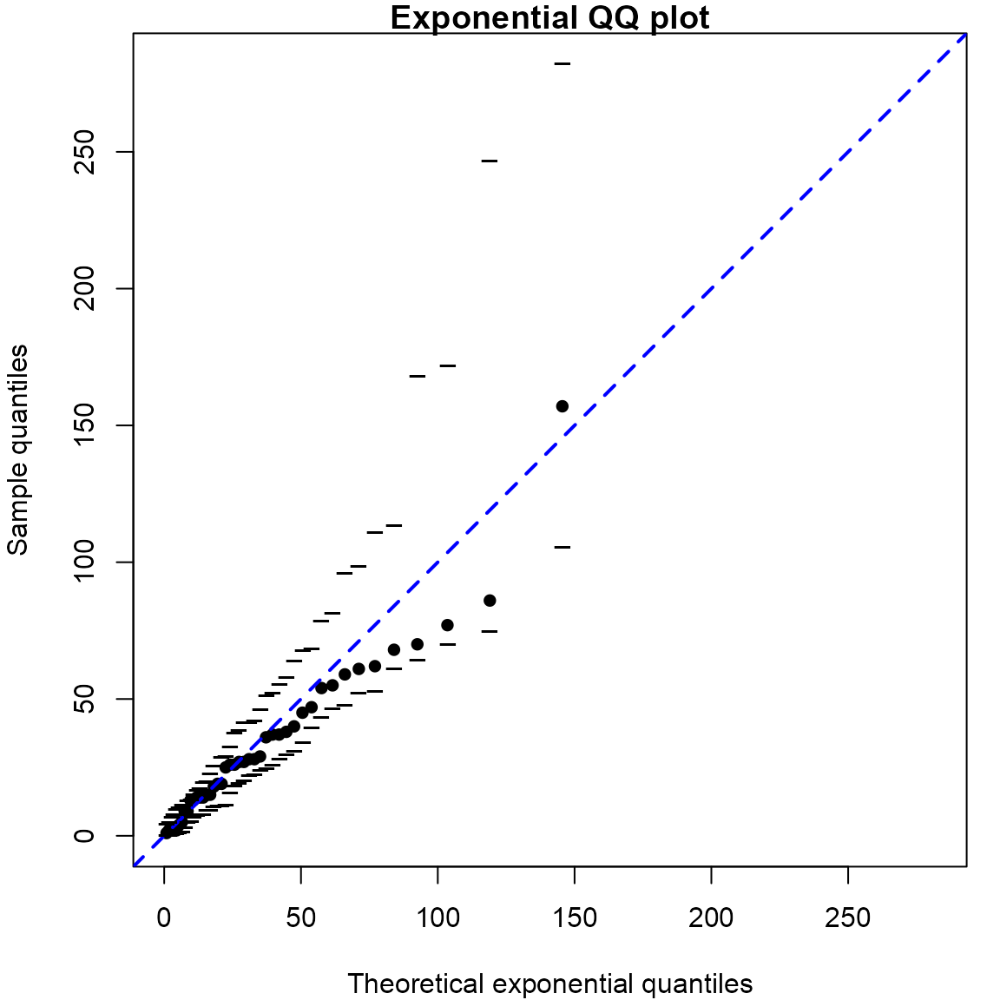

vignettes/stat0002-ch6c-qq-plots-vignette.Rmd
stat0002-ch6c-qq-plots-vignette.RmdThis vignette produces some of the QQ plots that appear at the end of Chapter 6 of the notes.
> library(stat0002)We create plots that are similar to those in Figure 6.24 of the
notes. They are slightly different from the ones in the notes because
R’s qqnorm function uses a method of calculating the
theoretical quantiles that is designed specifically for the normal
distribution, whereas in Section
6.11.1 we used an approach that ties in with the way that we had
calculated sample quantiles earlier in STAT0002. The dashed lines in the
plots are drawn through the (sample and theoretical) lower and upper
quartiles.
> # Normal
> normal <- rnorm(100)
> qqnorm(normal, pch = 16, xlab = "Theoretical N(0, 1) Quantiles", main = "normal")
> qqline(normal, lwd = 3, lty = 2)
> # Create an outlier
> outlier <- normal
> outlier[100] <- 6
> qqnorm(outlier, pch = 16, xlab = "Theoretical N(0, 1) Quantiles", main = "outlier")
> qqline(outlier, lwd = 3, lty = 2)> # Heavy-tailed (Student's t distribution, with 2 degrees of freedom)
> StudentsT <- rt(100, 2)
> qqnorm(StudentsT, pch = 16, xlab = "Theoretical N(0, 1) Quantiles", main = "heavy-tailed")
> qqline(StudentsT, lwd = 3, lty = 2)
> # Light-tailed (Uniform(-3/4, 3/4))
> uniform <- runif(100, -0.75, 0.75)
> qqnorm(uniform, pch = 16, xlab = "Theoretical N(0, 1) Quantiles", main = "light-tailed")
> qqline(uniform, lwd = 3, lty = 2)> # Positively skewed (gamma(2, 1) distribution)
> gam <- rgamma(100, shape = 2)
> qqnorm(gam, pch = 16, xlab = "Theoretical N(0, 1) Quantiles", main = "positive skew")
> qqline(gam, lwd = 3, lty = 2)
> # Negatively skewed (10 - gamma(2, 1) distribution)
> neggam <- 10 - rgamma(100, 2)
> qqnorm(neggam, pch = 16, xlab = "Theoretical N(0, 1) Quantiles", main = "negative skew")
> qqline(neggam, lwd = 3, lty = 2)We produce an exponential QQ plot based on the waiting times between
births in the Australian birth times dataset. The rate \(\lambda\) of the assumed Poisson process of
births is estimated using the reciprocal of the sample mean, as detailed
in the notes. The plot is equivalent to the figure in the notes, but the
simulation envelopes are different because, unless we fix the random
number seed, the simulated datasets on which the envelopes are based
will be different each time we call qexp.
> # Calculate the waiting times until each birth
> waits <- diff(c(0, aussie_births[, "time"]))
> # Produce the QQ plot
> lambdahat <- qqexp(waits, envelopes = 19)> # Estimate of lambda: rate of births per hour
> lambdahat * 60
estimate of lambda
1.839721 The qqexp function offers the option to estimate \(\lambda\) using \(\ln 2 / m\), where \(m\) is the sample median of the waiting
times. Can you see why this makes sense? The following
code implements this and shows how we can alter the appearance of the
plot.
> lambdahat2 <- qqexp(waits, statistic = "median", envelopes = 19, pch = 16,
+ line = list(lty = 2, lwd = 2, col= "blue"))
> # Estimate of lambda calculated from the sample median
> lambdahat2 * 60
estimate of lambda
1.56939